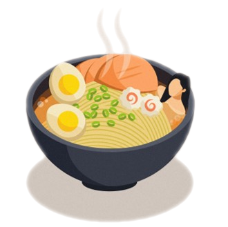
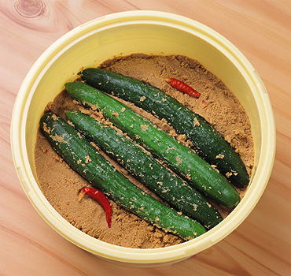
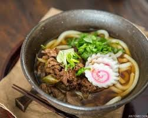

|
 |
Японська кулінарія |
|
Нукадзуке (Nuka-zuke) готують, маринуючи овочі в пасті з рисових висівок (kome-nuka) і солі. Висівки отримують, знімаючи зовнішній коричневий шар з рисового зерна при його шліфуванні. І тільки в Японії придумали такий спосіб маринування, ні в жодній іншій країні Азії його не використовують. Рисові висівки багаті вітамінами В1 і В2, таким чином виходить дуже корисне блюдо. |
 |
|  |
Удон (饂飩) — один из видов лапши из пшеничной муки, характерных для японской кухни, как и соба. Слово происходит от южнокитайского названия вонтонов. Удон заимствован из Китая в XIV веке, в отличие от рамэна, пришедшего из Китая уже после окончания периода закрытия Японии от иностранцев в начале эпохи Мэйдзи. Основное отличие удона от рамэна — при приготовлении лапши не используется яйцо. |
|